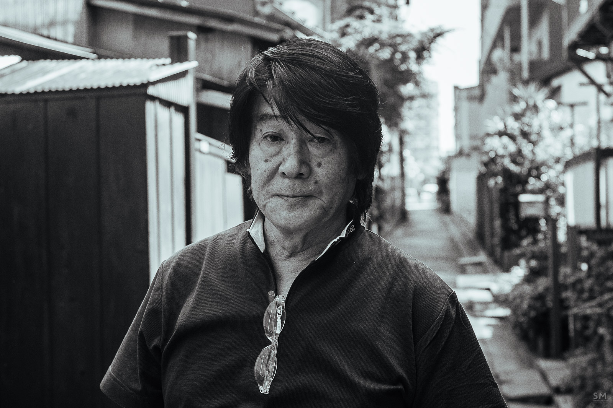

Va descobrir la fotografia als anys 60 treballant com a assistent de l'estudi fotogràfic d'Eikoh Hosoe a Tòquio. El 1968 cofunda la revista Provoke (1968–70) amb Takuma Nakahira, revolucionant la fotografia japonesa amb el manifest are, bure, boke (grana, tremolor, desenfocament). Farewell Photography (1972) "destrueix" la fotografia per reconstruir-la. Influït per Kerouac i William Klein. Publica la sèrie Record de manera irregular des dels anys 70. Avui als seus 80 anys segueix sortint cada dia amb una càmera compacta.